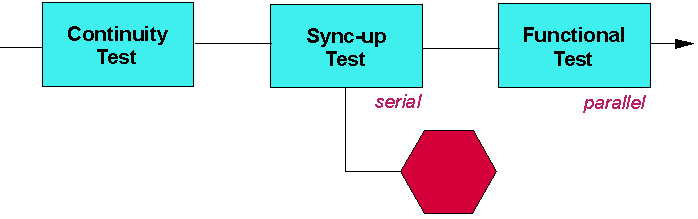

Match Loops for Syncing - Basic Strategy
A match loop is often used for syncing - to set a device into a known state before testing.
If your test flow requires many syncing operations, the setup below shows a simple way of reducing the probability that parallel match loops fail later in the flow.

The sync-up test suite after the continuity test is executed serially. This ensures that devices passing this test suite are at least possible of syncing up. Subsequent parallel match loop tests, therefore, have less of a probability of failing.
Note An additional way to improve throughput is not to use as many sync-up tests
(Match loops are time-consuming) if possible. Rather, design individual tests that leave devices
in states that are required for the next test.
Functional changes
- Introduced before SmarTest 6.3.2